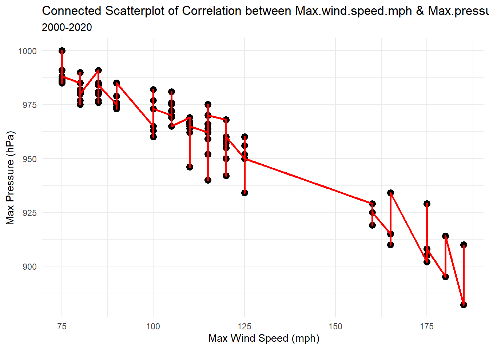
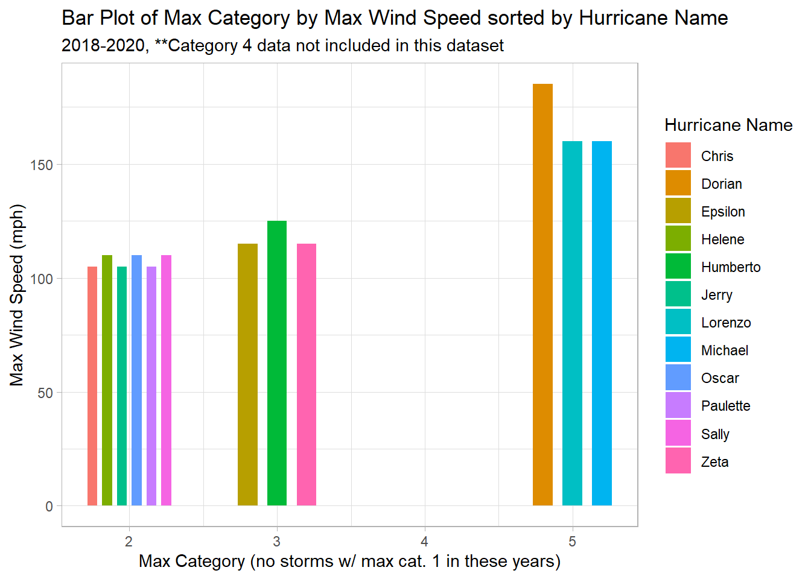
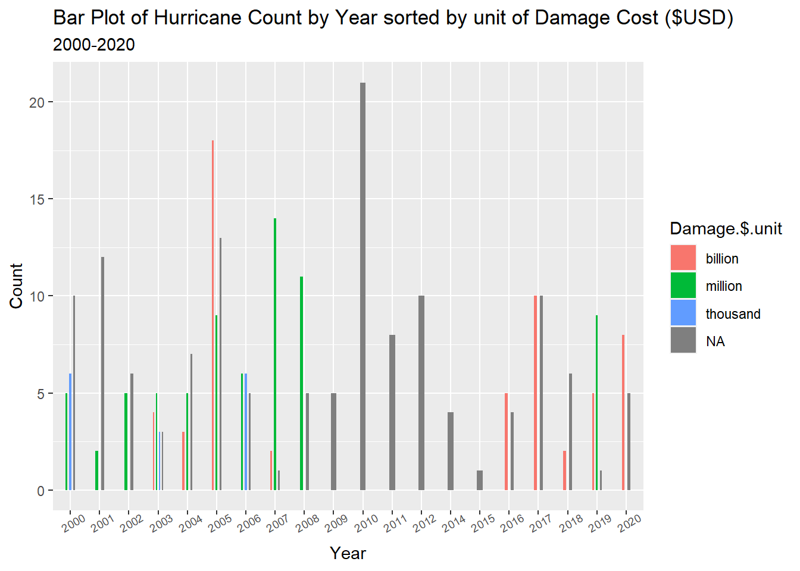

For this homework, your goal is to read in a more complicated dataset. Please use the category tag “hw2” as well as a tag for the dataset you choose to use.
Read in a dataset. It’s strongly recommended that you choose a dataset you’re considering using for the final project. If you decide to use one of the datasets we have provided, please use a challenging dataset - check with us if you are not sure.
Clean the data as needed using dplyr and related tidyverse packages. Provide a narrative about the data set (look it up if you aren’t sure what you have got) and the variables in your dataset, including what type of data each variable is. The goal of this step is to communicate in a visually appealing way to non-experts - not to replicate r-code. Identify potential research questions that your dataset can help answer.
Code
# reading in the datasetatlantic_hurricanes <-read_csv("_mysampledatasets/atlantic_hurricanes.csv")atlantic_hurricanes
Narrative About The Data
Code
summary(atlantic_hurricanes)
...1 Name Duration Wind speed
Min. : 0.0 Length:458 Length:458 Length:458
1st Qu.:114.2 Class :character Class :character Class :character
Median :228.5 Mode :character Mode :character Mode :character
Mean :228.5
3rd Qu.:342.8
Max. :457.0
Pressure Areas affected Deaths Damage
Length:458 Length:458 Length:458 Length:458
Class :character Class :character Class :character Class :character
Mode :character Mode :character Mode :character Mode :character
REf Category
Length:458 Min. :1.000
Class :character 1st Qu.:1.000
Mode :character Median :2.000
Mean :2.037
3rd Qu.:3.000
Max. :5.000
Code
dim(atlantic_hurricanes)
[1] 458 10
This dataset provides insights into Atlantic hurricanes, hurricanes that developed in the Atlantic Ocean area, across a 100 year time period, from 1920 to 2020. This dataset lists hurricanes that fall under the Category 1, Category 2, Category 3, and Category 5 classifications; therefore, it doesn’t include Category 4 hurricanes nor does it include (storms that didn’t develop beyond) tropical storms and tropical depressions. 458 hurricanes or observations/rows are included in this dataset. There are 10 variables. Variables in the original version of the data are:
…1 or X (or the list number/ID of the hurricane as entered into the dataset, mostly used for organizational, data entry purposes)
the name of the hurricane (character value),
the duration of the hurricane/the dates that it occurred (numeric/character value?),
the wind speed of the hurricane (in miles per hour and kilometers per hour) (numeric value),
the pressure of the hurricane (in atmospheric pressure-hPa and in inch of mercury-inHg) (numeric value),
the number of deaths caused by the hurricane (numeric value),
the amount of damage in US dollars caused by the hurricane (numeric value),
the category of the hurricane (Cat 1, 2, 3, or 5) (number representing a character value?),
the numerically assigned references/footnotes that provide further information about the hurricane (number representing a character value?.
**Using the summary () function, most of the values for each variable are listed as character values because they do include words, abbreviations, units of measurement, other symbols/punctuation in them currently, in/after the process of tidying the dataset, I hope to make sure that all of the variables that I’ve listed as having numeric values in paratheses above will be then ‘understood’/interpreted by R as having numeric values. However, because I am a beginner in R–I don’t know if I’ll be able to accomplish all of what I perceive has to be cleaned within the suite of Homework 2 alone–as I will likely be working with this dataset (outside of the challenge assignments) all the way through to the final project, but I’ll try my best:)
Data Cleaning
1. Removing REf Column and the …1 or X Column
I am removing the REf column because I am unclear on what it represents, and I do not believe it will be useful for my purposes in tidying and working towards analyzing the snapshot this dataset provides into Atlantic hurricanes more broadly. I believe REf is potentially referring to listed/numbered footnote references in the original study. I sourced this dataset from Kaggle, https://www.kaggle.com/datasets/valery2042/hurricanes, and do not currently have access to the original study. The only information provided about sources on the dataset’s Kaggle page is, “I scraped Wikipedia pages of Atlantic hurricanes of Categoris 1,2,3 and 5 using pandas/html” (Liamtsau, 2022). I am removing the ..1/X column as well because this is simply the list/ID number of each hurricane as it is entered into the dataset, and since R Studio maintains its own list/ID number on the far left of the table I believe the X variable is no longer necessary. Also, since the first number in the X column is 0 for the first hurricane listed instead of 1, this can be confusing for some readers whose numbering convention starts with 1. Scrolling all the way to the end of the table (page 46 for me), we can see that the last value listed in the X column is 457, which is a slight mismatch from the 458 rows/observation values, which represented the total number of hurricanes included in the study, that R computed the dataset to have.
Code
# remove column named REf and the X Columnatlantic_hurricanes2 <- atlantic_hurricanes %>%select(-c(...1,REf))atlantic_hurricanes2
Looks like the REf and X (or …1) columns were successfully removed! There should now be 8 columns.
2. Separate Wind.speed into Wind.speed.mph and Wind.speed.kmh and Pressure into Pressure.hPa and Pressure.inHg
In the current version of the dataset, within the Wind.speed column, values for each hurricane’s wind speed are provided in miles per hour (mph) and kilometers per hour (km/h) in the same cell. Likewise, values for each hurricane’s pressure are provided in hPa (atmospheric pressure) and inHg (inch of Mercury). I would like to separate those values, so each unit of measurement for the wind speed and pressure, respectively has their own distinct columns.
Code
# separate the Wind.speed column into Wind.speed.mph and Wind.speed.kmhatlantic_hurricanes3 <-separate(atlantic_hurricanes2, `Wind speed`, into =c("Wind.speed.mph", "Wind.speed.kmh"), sep ="\\(")atlantic_hurricanes3
Code
# separate Pressure column into Pressure.hPa and Pressure.inHgatlantic_hurricanes4 <-separate(atlantic_hurricanes3, Pressure, into =c("Pressure.hPa", "Pressure.inHg"), sep =" ")atlantic_hurricanes4
Looks like each unit of measurement for a hurricane’s wind speed (Wind.speed.mph and Wind.speed.kmh) and a hurricane’s pressure (Pressure.hPa and Pressure.inHg) now have their own distinct columns!
3. Removing measurement unit abbreviations and unneeded parentheses from values in the Wind.speed.mph, Wind.speed.kmh, Pressure.hPa, and Pressure.inHg columns
I would like to remove the measurement unit abbreviations and unneeded parentheses from values in the Wind.speed.mph, Wind.speed.kmh, Pressure.hPa, and Pressure.inHg columns so that only the numbers/numeric values remain. Once R reads these columns as have numeric values, I’ll be able to run summary statistics and other relevant numeric related functions using them that’ll provide useful information to analyze.
Code
# removing "mph" from the end of values in the Wind.speed.mph columnatlantic_hurricanes5 <-mutate(atlantic_hurricanes4, Wind.speed.mph =as.numeric(str_extract(Wind.speed.mph,pattern="[:digit:]+")))atlantic_hurricanes5
Code
# removing "km/h)" from the end of values in the Wind.speed.kmh columnatlantic_hurricanes6 <-mutate(atlantic_hurricanes5, Wind.speed.kmh =as.numeric(str_extract(Wind.speed.kmh,pattern ="[:digit:]+")))atlantic_hurricanes6
Code
# removing commas from values in Pressure.hPa# removing "hPa" from the end of values in the Pressure.hPa columnatlantic_hurricanes7<-mutate(atlantic_hurricanes6, Pressure.hPa =str_remove(Pressure.hPa, ","),Pressure.hPa=as.numeric(str_extract(Pressure.hPa,pattern ="[:digit:]+")))atlantic_hurricanes7
Code
# removing "(" and "inHg)" from values in Pressure.inHg column#areas affectedn_areas_max <-max(str_count(atlantic_hurricanes7[!is.na(atlantic_hurricanes7$`Areas affected`),]$`Areas affected`, "[a-z],"))+2#separate areas affected into multiple columns then pivot longer into one column, called areaatlantic_hurricanes8 <- atlantic_hurricanes7 %>%separate(`Areas affected`, into =paste0("a",1:n_areas_max), sep =",") %>%pivot_longer(c(a1,a2,a3,a4,a5,a6,a7,a8,a9,a10,a11),names_to ="del", values_to="area") %>%select(-del)%>%filter(!is.na(area))atlantic_hurricanes8
Reading Back in the Data Set after manually changing small things in Google Sheets
I made a few minor changes to the atlantic_hurricanes8 dataset in Google Sheets such as removing cross signs (a special character) from the end of some duration dates, changing the dashes in the duration column from double dash (–, a special character) to a single dash (-), duplicating rows to separate two or more different affected areas that previously were not listed with spaces between them and changing the name of the Category column to Max.category.
Code
# reading back in data set after manually changing some small things in Google Sheetsatlantic_hurricanes9 <-read_csv("_mysampledatasets/atlantic_hurricanes8_GoogleSheetsVersion.csv")atlantic_hurricanes9
Additional Cleaning
Removing Wind.speed.kmh and Pressure.inHg columns and renaming Wind.speed.mph to Max.wind.speed.mph and Pressure.hPa into Max.pressure.hPa
Code
# Deleting Wind.speed.kmh and Pressure.inHg columns so that there's only one measure for wind speed (mph) and one measure for pressure (hPa)atlantic_hurricanes10 <- atlantic_hurricanes9 %>%select(-c(Wind.speed.kmh, Pressure.inHg))atlantic_hurricanes10
# renaming Wind.speed.mph to Max.wind.speed.mph and Pressure.hPa to Max.pressure.hPaatlantic_hurricanes12 <- atlantic_hurricanes11 %>%rename(Max.wind.speed.mph=Wind.speed.mph)%>%rename(Max.pressure.hPa=Pressure.hPa)atlantic_hurricanes12
Looks like Wind.speed.kmh and Pressure.inHg were removed successfully!
Tidying the Deaths column: changing “None” values to 0 and “Unknown” values to NA and changing Deaths column to read as a numeric value
Code
# change values that read in Deaths column as "None" to the number 0atlantic_hurricanes12$Deaths <-str_replace(atlantic_hurricanes12$Deaths, "None", "0")atlantic_hurricanes12
Code
# change values in Deaths column that read as "Unknown" to NAatlantic_hurricanes12$Deaths <-na_if(atlantic_hurricanes12$Deaths, "Unknown")atlantic_hurricanes12
Code
# change values in Deaths column that contain >1,000 to NAatlantic_hurricanes12$Deaths <-na_if(atlantic_hurricanes12$Deaths, ">1,000")atlantic_hurricanes12
Code
# change Deaths column to read as a numeric variableatlantic_hurricanes13 <-transform(atlantic_hurricanes12, Deaths =as.numeric(Deaths))atlantic_hurricanes13
As expected, looks like the Deaths column now reads as a numeric variable and the “None” value has been switched to 0 and the “Unknown” value has been switched to NA!
Tidying the Damage column
Currently, there are a handful of values in the Damage column that will not make for the clearest analysis. All of the values contained in the Damage column can be seen when running the unique () function, which I will do below. I will change values that do not make for the clearest analysis/are less straightforward to NA. I will also remove the dollar signs, assuming that the creator of this dataset used USD for all monetary values. This is part of the process of having Damage eventually read as a numeric variable–so I can compute summary statistics and do visualizations off of the dollar amount. Like the Deaths column, there is also a value in the Damage column called “None” but instead of changing that to 0 I will be changing that to NA because I find it hard to believe that a hurricane (even of a lower intensity) caused zero damage (as a qualitative descriptor) and/or $0 worth of damage as a more quantitative descriptor.
Code
# checking for all unique values in the Damage columnunique(atlantic_hurricanes13$Damage)
Looks like all of the less clear/less straightforward values in the Damage column have been removed!
Code
# separating Damage into Damage.amount and Damage.unitatlantic_hurricanes15 <- atlantic_hurricanes14%>%separate(Damage, c("Damage.$.amount", "Damage.$.unit"), " ")atlantic_hurricanes15
Code
# removing $ dollar sign from Damage.$.amount column, making Damage.$.amount column a numeric variableatlantic_hurricanes15$`Damage.$.amount`=as.numeric(gsub("\\$", "", atlantic_hurricanes15$`Damage.$.amount`))atlantic_hurricanes15
Looks like the Damage column has been separated into two different columns, and the Damage.$.amount column is now a numeric variable!
Revisiting/Further Cleaning the area column
I’d like to change “No land areas” and “None” values within the area column to NA; with that said, in order to make that change, I think it’s fitting to rename the area column to Land.areas.affected, so NA in that case could mean the land areas affected were/are unknown or there were no land areas affected, as in the hurricane system only remained in open waters and did not formally make landfall at any land-based location/territory.
Code
# Renaming area to Land.areas.affectedatlantic_hurricanes16 <- atlantic_hurricanes15 %>%rename(Land.areas.affected=area)atlantic_hurricanes16
Code
# viewing all unique values in Land.areas.affectedunique(atlantic_hurricanes16$Land.areas.affected)
[1] "Central America" "Gulf of Mexico"
[3] "Mexico" "None"
[5] "Newfoundland" "Gulf Coast of the United States"
[7] "United States East Coast" "Cuba"
[9] "The Bahamas" "Cape Verde"
[11] "Windward Islands" "Leeward Islands"
[13] "United States Gulf Coast" "Azores"
[15] "Bermuda" "Newfoundland and Labrador"
[17] "Jamaica" "Haiti"
[19] "Texas" "Yucatán Peninsula"
[21] "Tamaulipas" "Veracruz"
[23] "Puerto Rico" "Turks and Caicos Islands"
[25] "Eastern United States" "Honduras"
[27] "The Caribbean" "Nicaragua"
[29] "North Carolina" "Mid-Atlantic States"
[31] "Belize" "Guatemala"
[33] "Louisiana" "Mississippi"
[35] "Midwestern United States" "Saint Croix"
[37] "Dominican Republic" "Georgia"
[39] "Southwestern Florida" "Florida"
[41] "Bahamas" "South Carolina"
[43] "Virginia" "Martinique"
[45] "Saint Lucia" "Hispaniola"
[47] "Atlantic Canada" "Virgin Islands"
[49] "Sable Island" "Saba"
[51] "Anguilla" "Lesser Antilles"
[53] "Western Mexico" "Alabama"
[55] "The Carolinas" "New England"
[57] "Canadian Maritime Provinces" "Oklahoma"
[59] "Leeward Antilles" "Greater Antilles"
[61] "Northeastern United States" "Nova Scotia"
[63] "Ireland" "United Kingdom"
[65] "Norway" "Soviet Union"
[67] "British Isles" "Quebec"
[69] "Panama" "Costa Rica"
[71] "Cayman Islands" "Southeastern United States"
[73] "northern Mexico" "western Cuba"
[75] "Florida Panhandle" "Maryland"
[77] "Pennsylvania" "New York"
[79] "Maine" "Tennessee"
[81] "North Carolina and Virginia" "St. Lucia"
[83] "Barbados" "Grenada"
[85] "central United States" "Canada"
[87] "Eastern Canada" "Iberian Peninsula"
[89] "Trinidad and Tobago" "Venezuela"
[91] "Colombia" "Socorro Island"
[93] "El Salvador" "Northern Mexico"
[95] "Southern Texas" "Delaware"
[97] "Massachusetts" "Scotland"
[99] "Eastern Coast of the United States" "Europe"
[101] "Madeira Islands" "Southern Portugal"
[103] "Southwestern Spain" "Iceland"
[105] "Greenland" "Central Mexico"
[107] "Western Europe" "Tabasco"
[109] "Guadeloupe" "Montserrat"
[111] "Saint Thomas" "Trinidad"
[113] "Quintana Roo" "Tampico"
[115] "Chiapas" "Arkansas"
[117] "Campeche" "New Jersey"
[119] "Dominica" "Spain"
[121] "France" "Antigua"
[123] "Barbuda" "South Central United States"
[125] "Lucayan Archipelago" "West Africa"
[127] "Faroe Islands" "East Coast of the United States"
[129] "No land areas" "Central United States"
[131] "Northern Europe" "Turks and Caicos"
[133] "Yucatán peninsula" "No Land Areas"
[135] "United States Virgin Islands" "Northeastern Caribbean"
[137] "West Virginia" "Great Britain"
[139] "Southeast Mexico" "Cape Verde Islands"
[141] "Antilles" "Portugal"
[143] "Mid-Atlantic" "Southwestern Quebec"
[145] "United States East coast" "South Texas"
[147] "South Florida" "Ontario"
[149] "Cabo Verde"
Code
# changing "None" and "No land areas" and "No Land Areas" to NAatlantic_hurricanes16$Land.areas.affected[startsWith(atlantic_hurricanes16$Land.areas.affected, "None")] <-NAatlantic_hurricanes16$Land.areas.affected[startsWith(atlantic_hurricanes16$Land.areas.affected, "No land areas")] <-NAatlantic_hurricanes16$Land.areas.affected[startsWith(atlantic_hurricanes16$Land.areas.affected, "No Land Areas")] <-NA#re-checking for NA in Land.areas.affected columnatlantic_hurricanes17 <- atlantic_hurricanes16atlantic_hurricanes17
Code
unique(atlantic_hurricanes17$Land.areas.affected)
[1] "Central America" "Gulf of Mexico"
[3] "Mexico" NA
[5] "Newfoundland" "Gulf Coast of the United States"
[7] "United States East Coast" "Cuba"
[9] "The Bahamas" "Cape Verde"
[11] "Windward Islands" "Leeward Islands"
[13] "United States Gulf Coast" "Azores"
[15] "Bermuda" "Newfoundland and Labrador"
[17] "Jamaica" "Haiti"
[19] "Texas" "Yucatán Peninsula"
[21] "Tamaulipas" "Veracruz"
[23] "Puerto Rico" "Turks and Caicos Islands"
[25] "Eastern United States" "Honduras"
[27] "The Caribbean" "Nicaragua"
[29] "North Carolina" "Mid-Atlantic States"
[31] "Belize" "Guatemala"
[33] "Louisiana" "Mississippi"
[35] "Midwestern United States" "Saint Croix"
[37] "Dominican Republic" "Georgia"
[39] "Southwestern Florida" "Florida"
[41] "Bahamas" "South Carolina"
[43] "Virginia" "Martinique"
[45] "Saint Lucia" "Hispaniola"
[47] "Atlantic Canada" "Virgin Islands"
[49] "Sable Island" "Saba"
[51] "Anguilla" "Lesser Antilles"
[53] "Western Mexico" "Alabama"
[55] "The Carolinas" "New England"
[57] "Canadian Maritime Provinces" "Oklahoma"
[59] "Leeward Antilles" "Greater Antilles"
[61] "Northeastern United States" "Nova Scotia"
[63] "Ireland" "United Kingdom"
[65] "Norway" "Soviet Union"
[67] "British Isles" "Quebec"
[69] "Panama" "Costa Rica"
[71] "Cayman Islands" "Southeastern United States"
[73] "northern Mexico" "western Cuba"
[75] "Florida Panhandle" "Maryland"
[77] "Pennsylvania" "New York"
[79] "Maine" "Tennessee"
[81] "North Carolina and Virginia" "St. Lucia"
[83] "Barbados" "Grenada"
[85] "central United States" "Canada"
[87] "Eastern Canada" "Iberian Peninsula"
[89] "Trinidad and Tobago" "Venezuela"
[91] "Colombia" "Socorro Island"
[93] "El Salvador" "Northern Mexico"
[95] "Southern Texas" "Delaware"
[97] "Massachusetts" "Scotland"
[99] "Eastern Coast of the United States" "Europe"
[101] "Madeira Islands" "Southern Portugal"
[103] "Southwestern Spain" "Iceland"
[105] "Greenland" "Central Mexico"
[107] "Western Europe" "Tabasco"
[109] "Guadeloupe" "Montserrat"
[111] "Saint Thomas" "Trinidad"
[113] "Quintana Roo" "Tampico"
[115] "Chiapas" "Arkansas"
[117] "Campeche" "New Jersey"
[119] "Dominica" "Spain"
[121] "France" "Antigua"
[123] "Barbuda" "South Central United States"
[125] "Lucayan Archipelago" "West Africa"
[127] "Faroe Islands" "East Coast of the United States"
[129] "Central United States" "Northern Europe"
[131] "Turks and Caicos" "Yucatán peninsula"
[133] "United States Virgin Islands" "Northeastern Caribbean"
[135] "West Virginia" "Great Britain"
[137] "Southeast Mexico" "Cape Verde Islands"
[139] "Antilles" "Portugal"
[141] "Mid-Atlantic" "Southwestern Quebec"
[143] "United States East coast" "South Texas"
[145] "South Florida" "Ontario"
[147] "Cabo Verde"
Looks like modifications to the Land.areas.affected column were made successfully as expected!
Summary Statistics
summary stats about Max.wind.speed.mph
Code
# summary stats about Max.wind.speed.mphsummary(atlantic_hurricanes17$Max.wind.speed.mph)
Min. 1st Qu. Median Mean 3rd Qu. Max.
75.0 85.0 100.0 104.9 115.0 190.0
summary stats about Max.pressure.hPa
Code
#summary stats about Max.pressure.hPasummary(atlantic_hurricanes17$Max.pressure.hPa)
Min. 1st Qu. Median Mean 3rd Qu. Max. NA's
882.0 960.0 975.0 968.8 985.0 1007.0 8
summary stats about Deaths
Code
#summary stats about Deathssummary(atlantic_hurricanes17$Deaths)
Min. 1st Qu. Median Mean 3rd Qu. Max. NA's
0.0 0.0 5.0 224.7 27.0 19325.0 81
summary stats about Land.areas.affected
Code
# summary stats about total number of distinct land areas affectedatlantic_hurricanes17%>%summarise(count =n_distinct(Land.areas.affected))
Code
# summary of how many times each land area was featuredtable(atlantic_hurricanes17$Land.areas.affected)
Alabama Anguilla
8 2
Antigua Antilles
1 2
Arkansas Atlantic Canada
1 37
Azores Bahamas
23 24
Barbados Barbuda
1 1
Belize Bermuda
12 57
British Isles Cabo Verde
4 1
Campeche Canada
1 5
Canadian Maritime Provinces Cape Verde
1 8
Cape Verde Islands Cayman Islands
1 7
Central America Central Mexico
26 2
central United States Central United States
1 1
Chiapas Colombia
1 4
Costa Rica Cuba
3 49
Delaware Dominica
1 2
Dominican Republic East Coast of the United States
6 16
Eastern Canada Eastern Coast of the United States
3 1
Eastern United States El Salvador
6 2
Europe Faroe Islands
1 1
Florida Florida Panhandle
53 1
France Georgia
1 12
Great Britain Greater Antilles
1 13
Greenland Grenada
3 1
Guadeloupe Guatemala
4 9
Gulf Coast of the United States Gulf of Mexico
7 3
Haiti Hispaniola
4 17
Honduras Iberian Peninsula
8 2
Iceland Ireland
4 3
Jamaica Leeward Antilles
22 4
Leeward Islands Lesser Antilles
16 19
Louisiana Lucayan Archipelago
19 1
Madeira Islands Maine
1 1
Martinique Maryland
2 3
Massachusetts Mexico
1 40
Mid-Atlantic Mid-Atlantic States
1 8
Midwestern United States Mississippi
4 9
Montserrat New England
2 10
New Jersey New York
3 3
Newfoundland Newfoundland and Labrador
24 1
Nicaragua North Carolina
7 22
North Carolina and Virginia Northeastern Caribbean
1 1
Northeastern United States Northern Europe
3 1
northern Mexico Northern Mexico
1 1
Norway Nova Scotia
3 15
Oklahoma Ontario
2 1
Panama Pennsylvania
3 3
Portugal Puerto Rico
1 28
Quebec Quintana Roo
2 2
Saba Sable Island
1 2
Saint Croix Saint Lucia
1 1
Saint Thomas Scotland
1 1
Socorro Island South Carolina
1 8
South Central United States South Florida
1 1
South Texas Southeast Mexico
1 1
Southeastern United States Southern Portugal
9 1
Southern Texas Southwestern Florida
1 1
Southwestern Quebec Southwestern Spain
1 1
Soviet Union Spain
1 2
St. Lucia Tabasco
1 2
Tamaulipas Tampico
4 1
Tennessee Texas
3 25
The Bahamas The Caribbean
31 11
The Carolinas Trinidad
12 1
Trinidad and Tobago Turks and Caicos
2 1
Turks and Caicos Islands United Kingdom
9 4
United States East coast United States East Coast
1 32
United States Gulf Coast United States Virgin Islands
18 1
Venezuela Veracruz
6 4
Virgin Islands Virginia
3 11
West Africa West Virginia
1 1
western Cuba Western Europe
2 2
Western Mexico Windward Islands
2 13
Yucatán peninsula Yucatán Peninsula
1 23
summary stats about Max.category
Code
# summary stats about total number of distinct Max categories featuredatlantic_hurricanes17%>%summarize(count =n_distinct(Max.category))
Code
# summary stats about how many times each distinct Max category is featuredtable(atlantic_hurricanes17$Max.category)
1 2 3 5
489 291 216 117
summary stats about Name
Code
#summary stats about total number of distinct hurricane names featuredatlantic_hurricanes17%>%summarize(count =n_distinct(Name))
Code
#summary stats about how many times each hurricane name was featured-->there are repeats because of how we pivoted land areas affected earlier but also hurricane names are periodically recycledtable(atlantic_hurricanes17$Name)
"Bahamas" "Camagüey"
2 6
"Cuba-Brownsville" "Cuba"
5 5
"Labor Day" "New England"
5 2
"San Felipe IIOkeechobee" "Tampico"
4 2
1928 Haiti hurricane 1932 Florida-Alabama hurricane
3 1
1933 Florida-Mexico hurricane 1935 Jérémie hurricane
3 4
1991 Perfect Storm Abby
3 14
Able Agnes
13 10
Alberto Alex
3 5
Alice Alicia
6 1
Allen Allison
4 6
Alma Andrew
9 3
Anita Anna
1 7
Arlene Arthur
5 3
Audrey Babe
2 8
Baker Barbara
6 2
Barry Becky
3 2
Belle Bertha
1 9
Beta Beth
1 4
Betsy Betty
3 1
Beulah Bill
4 1
Blanche Bob
3 7
Bonnie Brenda
8 3
Camille Candice
2 1
Carol Caroline
6 3
Celia Cesar
2 10
Chantal Charley
5 4
Charlie Chloe
5 3
Chris Cindy
3 9
Clara Claudette
2 7
Cleo Cora
4 4
Daisy Danielle
4 5
Danny David
12 2
Dawn Dean
1 6
Debbie Debby
7 7
Debra Dennis
5 10
Diana Diane
1 5
Dog Dolly
4 14
Doria Dorian
1 5
Doris Dorothy
1 3
Earl Easy
4 3
Edith Edna
10 3
Edouard Eight
1 7
Eighteen Elena
5 3
Eleven Ella
13 11
Ellen Eloise
1 5
Emily Emmy
10 2
Epsilon Erika
2 6
Erin Ernesto
7 10
Escuminac (Three) Esther
2 1
Ethel Evelyn
2 3
Faith Faye
2 1
Felix Fern
4 5
Fifi Fifteen
5 3
Five Flora
12 2
Florence Flossie
16 1
Flossy Floyd
9 6
Four Fox
22 5
Fran Francelia
6 1
Frances Fred
5 1
Frieda Gabrielle
2 2
Gail Gaston
1 6
George Georges
1 1
Gerda Gert
2 5
Gertrude Gilbert
1 5
Ginger Ginny
2 6
Gladys Gloria
6 2
Gordon Grace
19 5
Greta Gustav
4 4
Hanna Hannah
6 1
Harvey Hattie
1 1
Hazel Heidi
2 1
Helene Henri
4 2
Hilda Holly
2 2
Hortense How
1 2
Hugo Humberto
2 12
Ida Ilsa
4 1
Inez Inga
3 1
Irene Iris
13 3
Irma Isaac
5 1
Isabel Isbell
4 2
Isidore Item
5 2
Ivan Janet
5 2
Janice Jeanne
3 8
Jenny Jerry
2 3
Jig Jose
3 2
Josephine Joyce
2 3
Juan Judith
4 1
Kara Karen
1 3
Karl Kate
4 3
Katia Katie
1 7
Katrina Kendra
7 2
King Kirk
3 1
Klaus Kyle
8 10
Larry Laurie
2 1
Lee Lili
1 12
Lisa Lois
2 1
Lorenzo Love
4 4
Marco Maria
5 8
Marilyn Martha
5 2
Matthew Michael
5 6
Mitch Nana
3 1
Nate Nicole
4 1
Nine Nineteen
4 1
Noel Olga
9 4
One Ophelia
20 9
Oscar Otto
1 3
Paula Paulette
6 1
Philippe Richard
1 4
Rina Rita
2 2
Roxanne Sally
3 3
San Pedro Sandy
2 3
Seven Seventeen
11 1
Six Stan
10 7
Tanya Ten
1 12
Thirteen Three
8 13
Tomas Twelve
4 2
Two Unnamed
21 35
Vince Wilma
3 3
Zeta
8
summary stats about Damage.$.units
Code
# summary stats number of distinct Damage.$.unitsatlantic_hurricanes17%>%summarise(count =n_distinct(`Damage.$.unit`))
Code
# summary stats of each Damage.$.units featured-->should show that most of the hurricanes cost in the millions rangetable(atlantic_hurricanes17$`Damage.$.unit`)
billion million thousand
97 351 95
Note: Fully Tidying both the Duration column and the Damage.$.amount column is still in progress! *this and is relevant summary stats and visualizations incorporating them will be fully updated by the final project due date
Data Visualizations
making temporary modifications to duration column and pairing down the number of years from 1920-2020 down to 2000-2020 for visualization purposes in this draft
Code
# Modifying the Duration column into Date and Yearatlantic_hurricanes18 <- atlantic_hurricanes17 %>%separate(Duration, c("Date", "Year"), ", ")atlantic_hurricanes18
Code
# Editing down to only focus on years 2000-2020atlantic_hurricanes19 <- atlantic_hurricanes18[atlantic_hurricanes18$Year >="2000"& atlantic_hurricanes18$Year <="2020",]atlantic_hurricanes19
Connected Scatterplot of Correlation between Max.wind.speed.mph and Max.pressure.hPa
Code
# Scatterplot of Correlation between Max.wind.speed.mph and Max.pressure.hPaggplot(atlantic_hurricanes19, aes(x= Max.wind.speed.mph, y= Max.pressure.hPa))+geom_point(size=3, fill="black", color="black")+geom_line(color="red", size=1)+labs(title ="Connected Scatterplot of Correlation between Max.wind.speed.mph & Max.pressure.hPa", subtitle ="2000-2020", x=" Max Wind Speed (mph)", y="Max Pressure (hPa)")+theme(axis.text.x =element_text(angle =30, size =2))+facet_grid()+theme_minimal()

For the most part, it seems as though as Wind Speed (mph) increases, Pressure (hPa) decreases–meaning that more severe hurricanes (of a higher category) have lower pressure (hPa) measures.
Bar Plot of Max Category by Max.wind.speed.mph sorted by Hurricane Name, 2018-2020
Code
#pair down to storms between 2018-2020atlantic_hurricanes20 <- atlantic_hurricanes19[atlantic_hurricanes19$Year >="2018"& atlantic_hurricanes19$Year <="2020",]atlantic_hurricanes20
Code
# bar plot of Name by Max.wind.speed.mphggplot(atlantic_hurricanes20, aes(x= Max.category, y= Max.wind.speed.mph, fill= Name))+geom_bar(stat ="identity", position=position_dodge(width = .6), width =0.4)+labs(title ="Bar Plot of Max Category by Max Wind Speed sorted by Hurricane Name", subtitle="2018-2020, **Category 4 data not included in this dataset", x="Max Category (no storms w/ max cat. 1 in these years)", y="Max Wind Speed (mph)", fill="Hurricane Name")+facet_grid()+theme_light()

Looks like half of the hurricanes (6 out of 12) from 2018-2020 were Category 2 storms with max wind speeds hovering slightly over 100 mph.
Bar Plot of Hurricane Frequency over the Years, 2000-2020 sorted by Damage.$.unit
Code
# Bar Plot of Hurricane Count over the Years, 2000-2020, sorted by Damage.$.unitggplot(data = atlantic_hurricanes19, aes(x= Year, fill=`Damage.$.unit`))+geom_bar(width= .2, position=position_dodge(width = .4))+facet_grid()+theme(axis.text.x =element_text(angle =30, size =7))+labs(title="Bar Plot of Hurricane Count by Year sorted by unit of Damage Cost ($USD)", subtitle="2000-2020", x="Year", y="Count", fill="Damage.$.unit")

Overall, notwithstanding the damage $ unit values that are NA or non-available, it seems like the damage from hurricanes across 2000-2020 is becoming more expensive–even in more recent years where it may seem like there’s slightly less hurricanes per year (compared to a year like 2005), more hurricanes are more consistently causing damage in the billions of dollars…the last recorded hurricanes where the damage cost stayed within the thousands unit was in the year 2006–over 15 years ago.
Potential Research Questions This Dataset Could Help Answer
Do duration, wind speed, pressure, and hurricane category classification have any correlation with deaths and damage costs caused by hurricanes? If so, how so? Which areas are most susceptible to the most severe and devastating hurricanes in the century this dataset covers? On the other hand, there are some limitations to this dataset. Something I noticed this dataset doesn’t answer is, at what point in the duration of the hurricane were these measures of wind speed and pressure taken? While I’m assuming it is a listing of the highest intensity recorded wind speed and pressure throughout the course of the storm, this isn’t clear. Moreover, for the hurricanes that impacted multiple areas, the windspeed and pressure was likely not the exact same measure in each successive location the hurricane made landfall in. While insights can be deduced from this dataset, especially after additional, forthcoming stages of cleaning the data, studying each storm and each area individually will provide additional, more full and nuanced context(s) of systems, resources, lived experiences, etc that influenced and/or were influenced by the hurricane(s).
References
Liamtsau, V. (2022, August 5). Atlantic hurricanes (data cleaning challenge). Kaggle. https://www.kaggle.com/datasets/valery2042/hurricanes
Source Code
---title: "Homework 3: Diving into Data on Atlantic Hurricanes from 1920-2020"author: "Hunter Major"editor: sourcedescription: Homework 3 Assignment on Atlantic Hurricanes Datadate: "6/29/2023"format: html: df-print: paged toc: true code-fold: true code-copy: true code-tools: truecategories: - hw3 - atlantic_hurricanes - hunter_major---```{r}# loading packages into R Studiolibrary(tidyverse)library(dplyr)library(readr)library(readxl)library(tidyr)library(googlesheets4)library(stringr)library(lubridate)library(ggplot2)knitr::opts_chunk$set(echo =TRUE, warning=FALSE, message=FALSE)```## Homework 3 OverviewFor this homework, your goal is to read in a more complicated dataset. Please use the category tag "hw2" as well as a tag for the dataset you choose to use.Read in a dataset. It's strongly recommended that you choose a dataset you're considering using for the final project. If you decide to use one of the datasets we have provided, please use a challenging dataset - check with us if you are not sure. Clean the data as needed using dplyr and related tidyverse packages.Provide a narrative about the data set (look it up if you aren't sure what you have got) and the variables in your dataset, including what type of data each variable is. The goal of this step is to communicate in a visually appealing way to non-experts - not to replicate r-code.Identify potential research questions that your dataset can help answer.```{r}# reading in the datasetatlantic_hurricanes <-read_csv("_mysampledatasets/atlantic_hurricanes.csv")atlantic_hurricanes```## Narrative About The Data```{r}summary(atlantic_hurricanes)dim(atlantic_hurricanes)```This dataset provides insights into Atlantic hurricanes, hurricanes that developed in the Atlantic Ocean area, across a 100 year time period, from 1920 to 2020. This dataset lists hurricanes that fall under the Category 1, Category 2, Category 3, and Category 5 classifications; therefore, it doesn't include Category 4 hurricanes nor does it include (storms that didn't develop beyond) tropical storms and tropical depressions. 458 hurricanes or observations/rows are included in this dataset. There are 10 variables. Variables in the original version of the data are: - ...1 or X (or the list number/ID of the hurricane as entered into the dataset, mostly used for organizational, data entry purposes)- the name of the hurricane (character value), - the duration of the hurricane/the dates that it occurred (numeric/character value?),- the wind speed of the hurricane (in miles per hour and kilometers per hour) (numeric value),- the pressure of the hurricane (in atmospheric pressure-hPa and in inch of mercury-inHg) (numeric value),- the number of deaths caused by the hurricane (numeric value),- the amount of damage in US dollars caused by the hurricane (numeric value),- the category of the hurricane (Cat 1, 2, 3, or 5) (number representing a character value?),- the numerically assigned references/footnotes that provide further information about the hurricane (number representing a character value?.**Using the summary () function, most of the values for each variable are listed as character values because they do include words, abbreviations, units of measurement, other symbols/punctuation in them currently, in/after the process of tidying the dataset, I hope to make sure that all of the variables that I've listed as having numeric values in paratheses above will be then 'understood'/interpreted by R as having numeric values. However, because I am a beginner in R--I don't know if I'll be able to accomplish all of what I perceive has to be cleaned within the suite of Homework 2 alone--as I will likely be working with this dataset (outside of the challenge assignments) all the way through to the final project, but I'll try my best:)## Data Cleaning#### 1. Removing REf Column and the ...1 or X ColumnI am removing the REf column because I am unclear on what it represents, and I do not believe it will be useful for my purposes in tidying and working towards analyzing the snapshot this dataset provides into Atlantic hurricanes more broadly. I believe REf is potentially referring to listed/numbered footnote references in the original study. I sourced this dataset from Kaggle, https://www.kaggle.com/datasets/valery2042/hurricanes, and do not currently have access to the original study. The only information provided about sources on the dataset's Kaggle page is, "I scraped Wikipedia pages of Atlantic hurricanes of Categoris 1,2,3 and 5 using pandas/html" (Liamtsau, 2022). I am removing the ..1/X column as well because this is simply the list/ID number of each hurricane as it is entered into the dataset, and since R Studio maintains its own list/ID number on the far left of the table I believe the X variable is no longer necessary. Also, since the first number in the X column is 0 for the first hurricane listed instead of 1, this can be confusing for some readers whose numbering convention starts with 1. Scrolling all the way to the end of the table (page 46 for me), we can see that the last value listed in the X column is 457, which is a slight mismatch from the 458 rows/observation values, which represented the total number of hurricanes included in the study, that R computed the dataset to have.```{r}# remove column named REf and the X Columnatlantic_hurricanes2 <- atlantic_hurricanes %>%select(-c(...1,REf))atlantic_hurricanes2 ```Looks like the REf and X (or ...1) columns were successfully removed! There should now be 8 columns.#### 2. Separate Wind.speed into Wind.speed.mph and Wind.speed.kmh and Pressure into Pressure.hPa and Pressure.inHgIn the current version of the dataset, within the Wind.speed column, values for each hurricane's wind speed are provided in miles per hour (mph) and kilometers per hour (km/h) in the same cell. Likewise, values for each hurricane's pressure are provided in hPa (atmospheric pressure) and inHg (inch of Mercury). I would like to separate those values, so each unit of measurement for the wind speed and pressure, respectively has their own distinct columns.```{r}# separate the Wind.speed column into Wind.speed.mph and Wind.speed.kmhatlantic_hurricanes3 <-separate(atlantic_hurricanes2, `Wind speed`, into =c("Wind.speed.mph", "Wind.speed.kmh"), sep ="\\(")atlantic_hurricanes3``````{r}# separate Pressure column into Pressure.hPa and Pressure.inHgatlantic_hurricanes4 <-separate(atlantic_hurricanes3, Pressure, into =c("Pressure.hPa", "Pressure.inHg"), sep =" ")atlantic_hurricanes4```Looks like each unit of measurement for a hurricane's wind speed (Wind.speed.mph and Wind.speed.kmh) and a hurricane's pressure (Pressure.hPa and Pressure.inHg) now have their own distinct columns!#### 3. Removing measurement unit abbreviations and unneeded parentheses from values in the Wind.speed.mph, Wind.speed.kmh, Pressure.hPa, and Pressure.inHg columnsI would like to remove the measurement unit abbreviations and unneeded parentheses from values in the Wind.speed.mph, Wind.speed.kmh, Pressure.hPa, and Pressure.inHg columns so that only the numbers/numeric values remain. Once R reads these columns as have numeric values, I'll be able to run summary statistics and other relevant numeric related functions using them that'll provide useful information to analyze.```{r}# removing "mph" from the end of values in the Wind.speed.mph columnatlantic_hurricanes5 <-mutate(atlantic_hurricanes4, Wind.speed.mph =as.numeric(str_extract(Wind.speed.mph,pattern="[:digit:]+")))atlantic_hurricanes5``````{r}# removing "km/h)" from the end of values in the Wind.speed.kmh columnatlantic_hurricanes6 <-mutate(atlantic_hurricanes5, Wind.speed.kmh =as.numeric(str_extract(Wind.speed.kmh,pattern ="[:digit:]+")))atlantic_hurricanes6``````{r}# removing commas from values in Pressure.hPa# removing "hPa" from the end of values in the Pressure.hPa columnatlantic_hurricanes7<-mutate(atlantic_hurricanes6, Pressure.hPa =str_remove(Pressure.hPa, ","),Pressure.hPa=as.numeric(str_extract(Pressure.hPa,pattern ="[:digit:]+")))atlantic_hurricanes7``````{r}# removing "(" and "inHg)" from values in Pressure.inHg column#areas affectedn_areas_max <-max(str_count(atlantic_hurricanes7[!is.na(atlantic_hurricanes7$`Areas affected`),]$`Areas affected`, "[a-z],"))+2#separate areas affected into multiple columns then pivot longer into one column, called areaatlantic_hurricanes8 <- atlantic_hurricanes7 %>%separate(`Areas affected`, into =paste0("a",1:n_areas_max), sep =",") %>%pivot_longer(c(a1,a2,a3,a4,a5,a6,a7,a8,a9,a10,a11),names_to ="del", values_to="area") %>%select(-del)%>%filter(!is.na(area))atlantic_hurricanes8write_csv(atlantic_hurricanes8, "atlantic_hurricanes8.csv")```## Reading Back in the Data Set after manually changing small things in Google SheetsI made a few minor changes to the atlantic_hurricanes8 dataset in Google Sheets such as removing cross signs (a special character) from the end of some duration dates, changing the dashes in the duration column from double dash (--, a special character) to a single dash (-), duplicating rows to separate two or more different affected areas that previously were not listed with spaces between them and changing the name of the Category column to Max.category.```{r}# reading back in data set after manually changing some small things in Google Sheetsatlantic_hurricanes9 <-read_csv("_mysampledatasets/atlantic_hurricanes8_GoogleSheetsVersion.csv")atlantic_hurricanes9```## Additional Cleaning### Removing Wind.speed.kmh and Pressure.inHg columns and renaming Wind.speed.mph to Max.wind.speed.mph and Pressure.hPa into Max.pressure.hPa```{r}# Deleting Wind.speed.kmh and Pressure.inHg columns so that there's only one measure for wind speed (mph) and one measure for pressure (hPa)atlantic_hurricanes10 <- atlantic_hurricanes9 %>%select(-c(Wind.speed.kmh, Pressure.inHg))atlantic_hurricanes10atlantic_hurricanes11 <- atlantic_hurricanes10 %>%mutate(Start_Date=str_c(str_extract(Duration,"[:alpha:]+ [:digit:]+(?=,)"),str_extract(Duration,", [:digit:]+")))atlantic_hurricanes11# renaming Wind.speed.mph to Max.wind.speed.mph and Pressure.hPa to Max.pressure.hPaatlantic_hurricanes12 <- atlantic_hurricanes11 %>%rename(Max.wind.speed.mph=Wind.speed.mph)%>%rename(Max.pressure.hPa=Pressure.hPa)atlantic_hurricanes12```Looks like Wind.speed.kmh and Pressure.inHg were removed successfully!### Tidying the Deaths column: changing "None" values to 0 and "Unknown" values to NA and changing Deaths column to read as a numeric value```{r}# change values that read in Deaths column as "None" to the number 0atlantic_hurricanes12$Deaths <-str_replace(atlantic_hurricanes12$Deaths, "None", "0")atlantic_hurricanes12# change values in Deaths column that read as "Unknown" to NAatlantic_hurricanes12$Deaths <-na_if(atlantic_hurricanes12$Deaths, "Unknown")atlantic_hurricanes12# change values in Deaths column that contain >1,000 to NAatlantic_hurricanes12$Deaths <-na_if(atlantic_hurricanes12$Deaths, ">1,000")atlantic_hurricanes12# change Deaths column to read as a numeric variableatlantic_hurricanes13 <-transform(atlantic_hurricanes12, Deaths =as.numeric(Deaths))atlantic_hurricanes13```As expected, looks like the Deaths column now reads as a numeric variable and the "None" value has been switched to 0 and the "Unknown" value has been switched to NA!### Tidying the Damage columnCurrently, there are a handful of values in the Damage column that will not make for the clearest analysis. All of the values contained in the Damage column can be seen when running the unique () function, which I will do below. I will change values that do not make for the clearest analysis/are less straightforward to NA. I will also remove the dollar signs, assuming that the creator of this dataset used USD for all monetary values. This is part of the process of having Damage eventually read as a numeric variable--so I can compute summary statistics and do visualizations off of the dollar amount. Like the Deaths column, there is also a value in the Damage column called "None" but instead of changing that to 0 I will be changing that to NA because I find it hard to believe that a hurricane (even of a lower intensity) caused zero damage (as a qualitative descriptor) and/or $0 worth of damage as a more quantitative descriptor.```{r}# checking for all unique values in the Damage columnunique(atlantic_hurricanes13$Damage)``````{r}# changing less clear/straightforward values to NAatlantic_hurricanes13$Damage[startsWith(atlantic_hurricanes13$Damage, ">")] <-NAatlantic_hurricanes13$Damage[startsWith(atlantic_hurricanes13$Damage, "[")] <-NAatlantic_hurricanes13$Damage[startsWith(atlantic_hurricanes13$Damage, "M")] <-NAatlantic_hurricanes13$Damage[startsWith(atlantic_hurricanes13$Damage, "H")] <-NAatlantic_hurricanes13$Damage[startsWith(atlantic_hurricanes13$Damage, "U")] <-NAatlantic_hurricanes13$Damage[startsWith(atlantic_hurricanes13$Damage, "None")] <-NAatlantic_hurricanes13$Damage[startsWith(atlantic_hurricanes13$Damage, "E")] <-NAatlantic_hurricanes13$Damage[startsWith(atlantic_hurricanes13$Damage, "13")] <-NAatlantic_hurricanes13$Damage[startsWith(atlantic_hurricanes13$Damage, "5")] <-NA``````{r}atlantic_hurricanes14 <- atlantic_hurricanes13atlantic_hurricanes14unique(atlantic_hurricanes14$Damage)```Looks like all of the less clear/less straightforward values in the Damage column have been removed!```{r}# separating Damage into Damage.amount and Damage.unitatlantic_hurricanes15 <- atlantic_hurricanes14%>%separate(Damage, c("Damage.$.amount", "Damage.$.unit"), " ")atlantic_hurricanes15# removing $ dollar sign from Damage.$.amount column, making Damage.$.amount column a numeric variableatlantic_hurricanes15$`Damage.$.amount`=as.numeric(gsub("\\$", "", atlantic_hurricanes15$`Damage.$.amount`))atlantic_hurricanes15```Looks like the Damage column has been separated into two different columns, and the Damage.$.amount column is now a numeric variable!### Revisiting/Further Cleaning the area columnI'd like to change "No land areas" and "None" values within the area column to NA; with that said, in order to make that change, I think it's fitting to rename the area column to Land.areas.affected, so NA in that case could mean the land areas affected were/are unknown or there were no land areas affected, as in the hurricane system only remained in open waters and did not formally make landfall at any land-based location/territory.```{r}# Renaming area to Land.areas.affectedatlantic_hurricanes16 <- atlantic_hurricanes15 %>%rename(Land.areas.affected=area)atlantic_hurricanes16# viewing all unique values in Land.areas.affectedunique(atlantic_hurricanes16$Land.areas.affected)# changing "None" and "No land areas" and "No Land Areas" to NAatlantic_hurricanes16$Land.areas.affected[startsWith(atlantic_hurricanes16$Land.areas.affected, "None")] <-NAatlantic_hurricanes16$Land.areas.affected[startsWith(atlantic_hurricanes16$Land.areas.affected, "No land areas")] <-NAatlantic_hurricanes16$Land.areas.affected[startsWith(atlantic_hurricanes16$Land.areas.affected, "No Land Areas")] <-NA#re-checking for NA in Land.areas.affected columnatlantic_hurricanes17 <- atlantic_hurricanes16atlantic_hurricanes17unique(atlantic_hurricanes17$Land.areas.affected)```Looks like modifications to the Land.areas.affected column were made successfully as expected!## Summary Statistics### summary stats about Max.wind.speed.mph```{r}# summary stats about Max.wind.speed.mphsummary(atlantic_hurricanes17$Max.wind.speed.mph)```### summary stats about Max.pressure.hPa```{r}#summary stats about Max.pressure.hPasummary(atlantic_hurricanes17$Max.pressure.hPa)```### summary stats about Deaths```{r}#summary stats about Deathssummary(atlantic_hurricanes17$Deaths)```### summary stats about Land.areas.affected```{r}# summary stats about total number of distinct land areas affectedatlantic_hurricanes17%>%summarise(count =n_distinct(Land.areas.affected))# summary of how many times each land area was featuredtable(atlantic_hurricanes17$Land.areas.affected)```### summary stats about Max.category```{r}# summary stats about total number of distinct Max categories featuredatlantic_hurricanes17%>%summarize(count =n_distinct(Max.category))# summary stats about how many times each distinct Max category is featuredtable(atlantic_hurricanes17$Max.category)```### summary stats about Name```{r}#summary stats about total number of distinct hurricane names featuredatlantic_hurricanes17%>%summarize(count =n_distinct(Name))#summary stats about how many times each hurricane name was featured-->there are repeats because of how we pivoted land areas affected earlier but also hurricane names are periodically recycledtable(atlantic_hurricanes17$Name)```### summary stats about Damage.$.units```{r}# summary stats number of distinct Damage.$.unitsatlantic_hurricanes17%>%summarise(count =n_distinct(`Damage.$.unit`))# summary stats of each Damage.$.units featured-->should show that most of the hurricanes cost in the millions rangetable(atlantic_hurricanes17$`Damage.$.unit`)```## Note: Fully Tidying both the Duration column and the Damage.$.amount column is still in progress! *this and is relevant summary stats and visualizations incorporating them will be fully updated by the final project due date## Data Visualizations### making temporary modifications to duration column and pairing down the number of years from 1920-2020 down to 2000-2020 for visualization purposes in this draft```{r}# Modifying the Duration column into Date and Yearatlantic_hurricanes18 <- atlantic_hurricanes17 %>%separate(Duration, c("Date", "Year"), ", ")atlantic_hurricanes18# Editing down to only focus on years 2000-2020atlantic_hurricanes19 <- atlantic_hurricanes18[atlantic_hurricanes18$Year >="2000"& atlantic_hurricanes18$Year <="2020",]atlantic_hurricanes19```## Connected Scatterplot of Correlation between Max.wind.speed.mph and Max.pressure.hPa```{r}# Scatterplot of Correlation between Max.wind.speed.mph and Max.pressure.hPaggplot(atlantic_hurricanes19, aes(x= Max.wind.speed.mph, y= Max.pressure.hPa))+geom_point(size=3, fill="black", color="black")+geom_line(color="red", size=1)+labs(title ="Connected Scatterplot of Correlation between Max.wind.speed.mph & Max.pressure.hPa", subtitle ="2000-2020", x=" Max Wind Speed (mph)", y="Max Pressure (hPa)")+theme(axis.text.x =element_text(angle =30, size =2))+facet_grid()+theme_minimal()```For the most part, it seems as though as Wind Speed (mph) increases, Pressure (hPa) decreases--meaning that more severe hurricanes (of a higher category) have lower pressure (hPa) measures.## Bar Plot of Max Category by Max.wind.speed.mph sorted by Hurricane Name, 2018-2020```{r}#pair down to storms between 2018-2020atlantic_hurricanes20 <- atlantic_hurricanes19[atlantic_hurricanes19$Year >="2018"& atlantic_hurricanes19$Year <="2020",]atlantic_hurricanes20# bar plot of Name by Max.wind.speed.mphggplot(atlantic_hurricanes20, aes(x= Max.category, y= Max.wind.speed.mph, fill= Name))+geom_bar(stat ="identity", position=position_dodge(width = .6), width =0.4)+labs(title ="Bar Plot of Max Category by Max Wind Speed sorted by Hurricane Name", subtitle="2018-2020, **Category 4 data not included in dataset", x="Max Category (no storms w/ max cat. 1 in these years)", y="Max Wind Speed (mph)", fill="Hurricane Name")+facet_grid()+theme_light()```Looks like half of the hurricanes (6 out of 12) from 2018-2020 were Category 2 storms with max wind speeds hovering slightly over 100 mph.## Bar Plot of Hurricane Frequency over the Years, 2000-2020 sorted by Damage.$.unit```{r}# Bar Plot of Hurricane Count over the Years, 2000-2020, sorted by Damage.$.unitggplot(data = atlantic_hurricanes19, aes(x= Year, fill=`Damage.$.unit`))+geom_bar(width= .2, position=position_dodge(width = .4))+facet_grid()+theme(axis.text.x =element_text(angle =30, size =7))+labs(title="Bar Plot of Hurricane Count over the Years sorted by unit of Damage Cost ($USD)", subtitle="2000-2020", x="Year", y="Count", fill="Damage.$.unit")```Overall, notwithstanding the damage $ unit values that are NA or non-available, it seems like the damage from hurricanes across 2000-2020 is becoming more expensive--even in more recent years where it may seem like there's slightly less hurricanes per year (compared to a year like 2005), more hurricanes are more consistently causing damage in the billions of dollars...the last recorded hurricanes where the damage cost stayed within the thousands unit was in the year 2006--over 15 years ago.## Potential Research Questions This Dataset Could Help AnswerDo duration, wind speed, pressure, and hurricane category classification have any correlation with deaths and damage costs caused by hurricanes? If so, how so? Which areas are most susceptible to the most severe and devastating hurricanes in the century this dataset covers? On the other hand, there are some limitations to this dataset. Something I noticed this dataset doesn't answer is, at what point in the duration of the hurricane were these measures of wind speed and pressure taken? While I'm assuming it is a listing of the highest intensity recorded wind speed and pressure throughout the course of the storm, this isn't clear. Moreover, for the hurricanes that impacted multiple areas, the windspeed and pressure was likely not the exact same measure in each successive location the hurricane made landfall in. While insights can be deduced from this dataset, especially after additional, forthcoming stages of cleaning the data, studying each storm and each area individually will provide additional, more full and nuanced context(s) of systems, resources, lived experiences, etc that influenced and/or were influenced by the hurricane(s).## ReferencesLiamtsau, V. (2022, August 5). Atlantic hurricanes (data cleaning challenge). Kaggle. https://www.kaggle.com/datasets/valery2042/hurricanes